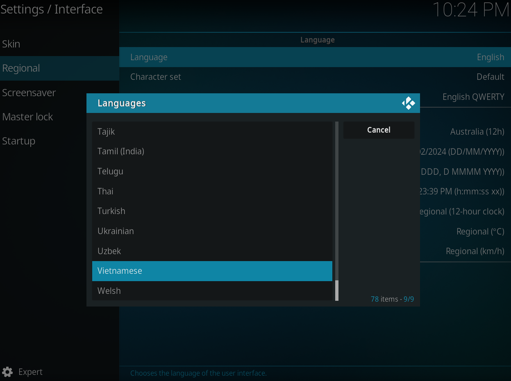
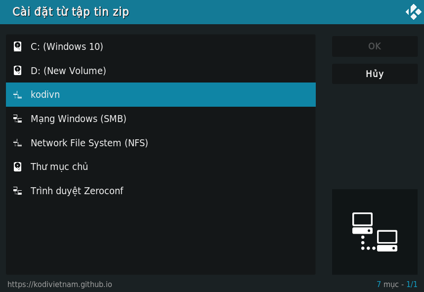
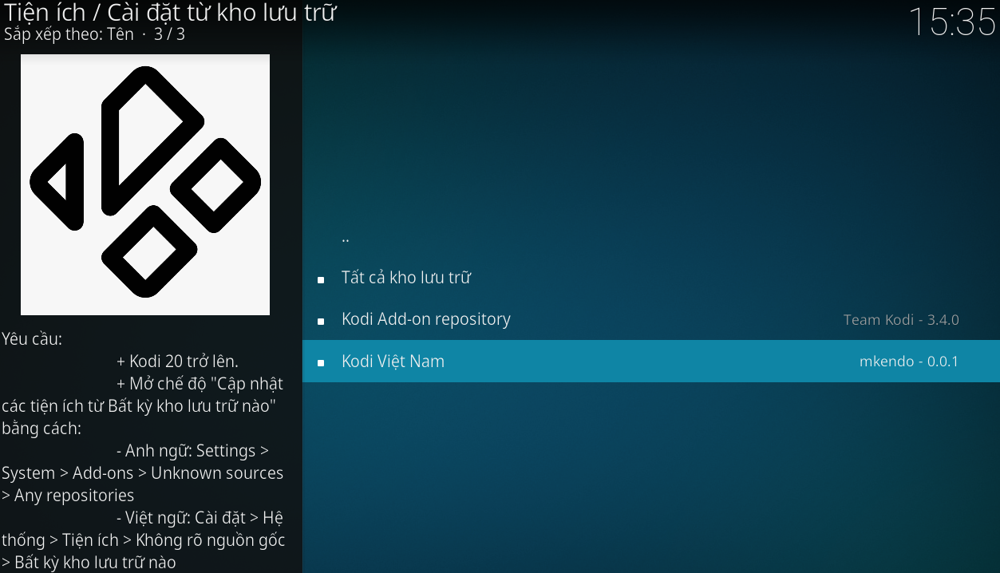

Thêm kho lưu trữ Kodi Việt Nam vào ứng dụng Kodi
- Thiết lập tiếng Việt cho Kodi, từ màn hình chính của Kodi nhấn vào biểu tượng bánh răng Settings > Interface > Regional > Language > Vietnamese
- Cho phép Kodi cài đặt cập nhật các tiện ích từ bên thứ 3: Cài đặt > Hệ thống > Tiện ích đánh dấu Không rõ nguồn gốc và chọn Bất kỳ kho lưu trữ nào

Bây giờ bạn có thể tải xuống tệp zip từ nút ở trên. Hoặc làm theo các hướng dẫn sau để thêm trang này bằng trình Quản lý tập tin của Kodi.
Hướng dẫn:
- Đi tới trình Quản lý tập tin trong Kodi, chọn Thêm nguồn
- Trong cửa sổ Thêm nguồn tập tin, nhấp vào <Không>, nhập url: https://kodivietnam.github.io, mục 'Nhập tên cho nguồn đa phương tiện này' đặt tên tùy ý, ví dụ: kodivn, bấm OK
- Quay trở lại màn hình cài đặt Hệ thống > Tiện ích > Cài đặt từ tập tin zip
- Chọn nguồn kodivn
- Chọn nguồn kodivietnam-0.0.1.zip, nhấn OK

Cài addon VietmediaF từ kho tiện ích:
- Chọn Hệ thống > Tiện ích
- Bấm vào Cài đặt từ kho lưu trữ
- Chọn Kodi Việt Nam v0.0.1
- Chọn Tiện ích Video
- Chọn VietmediaF
- Ở cửa sổ hiện ra nhấn Cài đặt
- Chọn OK
- Đợi thông báo Cài đặt tiện ích thành công
- Quay trở về trang chủ Kodi mục Tiện ích, bạn sẽ thấy addon VietmediaF mình vừa cài, thao tác cài đặt tương tự với các addon khác bạn nhé.

Diễn đàn thảo luận
Nhóm Facebook hỗ trợ về KODI:
Facebook: Cộng đồng KODI Việt NamTài khoản Fshare/4share siêu rẻ:
Zalo: 0915134560